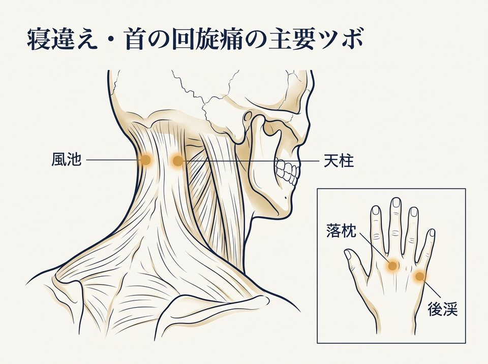

捻挫の鍼灸
関節のひねりによる靭帯・軟部組織の損傷。急性期対応後の循環改善と、長引く捻挫後遺症のケアを行います。


院長YouTube解説・関連動画
捻挫はスポーツをしているときや日常生活の中で起こる
捻挫の原因は、非常に様々です。捻挫はスポーツをしているときや日常生活の中で非常に起こりやすいです。
捻挫する部位で多い足の捻挫の原因は、階段などで段差を踏み外した時や石を踏んでしまった時、慣れないヒールを履いている時などに起こることが多いです。
段差を踏み外したりヒールと履いている時に足首が内側にひねられると外側の靭帯が切れたり伸びすぎたりします。組織に傷がつくことになるため、捻挫が起こるのです。
● 急な方向転換や着地の失敗
スポーツ中の急な方向転換やジャンプ後の着地失敗などで、足首に想定外の力が加わると、外くるぶし周辺の靭帯に過度な伸びや損傷が起こります。特に多いのが「足関節外側靱帯損傷」と呼ばれるタイプです。
● 筋力や柔軟性の低下
ふくらはぎや足裏の筋力が低下していたり、足首周りの柔軟性が不足していると、ちょっとした段差や傾きでもバランスを崩しやすくなり、捻挫を引き起こします。
● バランス感覚の低下
加齢や運動不足、あるいは過去の捻挫による神経機能の低下によって、身体の位置を感じるセンサーが鈍くなると、足を正しく着地できず、再発しやすくなります。
● 履き慣れない靴やヒールの影響
足に合っていない靴や、ヒールの高い靴は、足元が不安定になりやすく、ふいな動きに対して足首を守ることができなくなります。
◆靭帯や関節包が傷つくと、神経が刺激される
捻挫とは、関節を支える靭帯や関節包といった組織が無理に引き伸ばされ、損傷してしまった状態です。このとき、靭帯の中を通る痛みを感じる神経が直接傷つき、脳に痛み信号が送られます。組織が壊れたという警報が、痛みとして表れているのです。
◆炎症によって痛み物質が放出される
損傷部分では、修復のための炎症反応が始まります。この過程で、ブラジキニンという神経を直接刺激して痛みを引き起こす物質、プロスタグランジンという炎症を促進し、痛みを長引かせる物質、ヒスタミンやセロトニンという血管を拡げ、腫れや熱感を引き起こす物質が放出されます。これらの物質が神経に作用すると、さらに痛みが強く感じられるようになります。
◆腫れや内出血も神経を圧迫する
損傷部位に血液やリンパ液が溜まることで、腫れや内出血が起こります。これによって神経が圧迫され、動かしたときの痛みやジンジンするような鈍痛が続く原因になります。
◆身体の防御反応でもある
痛みは動かすと悪化するために休んでほしいという身体からのブレーキ信号でもあります。そのため、痛みを無視して動き続けると、損傷が広がり、改善が遅くなるというリスクがあります。
鍼灸では痛み物質と神経の興奮を落ち着かせるることで捻挫の改善に取り組みます。
捻挫が起こった部位の血流を促進し、発痛物質を早く流すように促します。また、脳内の痛み抑制ホルモンを引き出し、神経の興奮を抑えることで、痛みそのものをやわらげていきます。
捻挫の主な症状は、腫れ、熱感、痛み
捻挫の主な症状は、腫れ、熱感、痛みです。靭帯に傷がつくため、関節の周りの血管が切れてしまいます。そのため、内出血が起きて腫れが現れるのです。腫れによって炎症が起き、痛みを感じます。
捻挫の症状の程度は３つに分けることができます。
靭帯の断裂が一部分に起き、痛みと軽い腫れが現れる第１度、靭帯が部分的に断裂し、痛みと腫れとともに関節の運動の制限が起きる第２度、靭帯が完全に断裂し、関節が不安定になり、晴れ、痛み、熱感が強く現れる第３度です。
第１度と第２度の場合、改善するまでの期間は大体3週間程度と言われています。第３度の場合は、３週間よりさらに長い期間が改善までにかかります。また、場合によっては手術を行うこともあります。
◆ 軽度：靭帯が軽く伸びた状態
軽い痛みがあるが、歩くことは可能
腫れや内出血は少ない、もしくはない
関節の動きもある程度保たれている
▶︎一見大丈夫と思いやすいのがこの段階です。無理に動かすと悪化することがあるため注意が必要です。
◆ 中度：靭帯が部分的に断裂した状態
はっきりとした痛みと腫れ
押すと痛む圧痛点がある
関節が不安定になり、歩くのがつらい
内出血で皮膚が紫色になることもある
▶︎この段階になると、日常生活にも支障が出やすく、早めの処置が回復に大きく影響します。
◆ 重度：靭帯が完全に断裂した状態
激しい痛み
明らかな腫れや内出血
関節がぐらつく、体重をかけられない
痛みで動かすこともできない
▶︎完全断裂の状態では、場合によっては手術が検討されることもあります。なるべく早く病院に行くことをおすすめします。
捻挫が起こった時、1番大切なことは冷やすことです。アイシングをすることで炎症を抑えることができ、症状が和らぎます。
腫れがある場合は、腫れを軽減させるために圧迫をして一時的に血流の量を減らします。動かすと悪化する可能性が高いため、安静にして悪化することを防ぎます。
場合によってはテーピングをしたり松葉杖を使ったり電気を使ったりして改善を行うことも多いです。
捻挫が起こった時に痛みがなくても後で痛みが出て腫れることもあります。そのため、捻挫が起こった時は必ず冷やして処置することが大切です。
◆受傷直後〜2日：炎症を抑える
Rest（安静）：無理に動かさない
Ice（冷却）：1回15〜20分を目安に冷やす
Compression（圧迫）：テーピングや包帯で軽く圧をかける
Elevation（挙上）：心臓より高く足を上げ、腫れを抑える。
◆3日〜1週間：循環を促進し、修復を助ける
炎症が落ち着いてきたら、冷やすよりも温めることと流すことが重要になります。この段階では血流を良くすることで、傷ついた組織に酸素と栄養を届け、回復を促進します。
◆1週間以降：リハビリと再発予防
ある程度動けるようになったら、筋肉のこわばりや関節の固まりを解きほぐす段階に入ります。足首周りの可動域改善やバランス感覚を取り戻す神経トレーニング、再発予防の正しい歩き方や姿勢指導に取り組みましょう。
捻挫が癖になるとよく言われますがそうではありません。捻挫を繰り返してしまう原因は、一度起こしてしまった捻挫の処置がきちんとできないことです。
一度捻挫をすると関節には緩みが起きます。緩みをきちんと処置していない場合、再び捻挫をしやすい状態のままになってしまいます。
症状が軽いと思われる場合も病院に行ききちんと改善することで、捻挫を繰り返すことを予防することができます。
1ヶ月以上痛みが続く、腫れが引かないなどの場合は、捻挫後遺症と呼ばれる状態になっている可能性もあります。鍼灸では、損傷後の瘀血のような循環障害を改善し、自然回復が止まってしまった状態を動かすようアプローチして改善を行います。
▼ 詳しく知りたい項目だけタップして開けます（全項目の医学解説を収録）
01. 原因とメカニズム
なぜ症状が起きるのか・鍼灸の作用機序を読む
▼
01. 原因とメカニズム
なぜ症状が起きるのか・鍼灸の作用機序を読む
関節を強くひねることで筋肉・腱・靭帯・関節包が損傷する状態で、足首に最も多く起こります。段差の踏み外し、ヒール靴、スポーツ時の急な方向転換や着地失敗、筋力・柔軟性・バランスの低下などが要因です。組織損傷に伴う炎症物質（ブラジキニン・プロスタグランジン等）や腫れによる神経圧迫が痛みを引き起こします。
なぜ鍼灸で改善へ向かうのか？（作用機序の図解）
捻挫に対する鍼灸は、トリガーポイント解放と疼痛抑制系の作用機序を通じて、お体本来の回復力を引き出します。
手技では届きにくい深層筋の硬結（トリガーポイント）へ繊細な鍼で直接刺激を届けます。
CGRPや一酸化窒素の放出により微小血管が拡張し、滞っていた発痛物質の洗い流しを促します。
脊髄後角で痛み信号を遮断し、脳幹からの内因性鎮痛物質（エンドルフィン等）の働きを高めます。
防御性の筋スパズムが解け、関節可動域と本来の動きやすさが段階的に回復します。
02. よくあるお悩み
このような症状はありませんか？（4項目）
▼
02. よくあるお悩み
このような症状はありませんか？（4項目）
- ✓段差の踏み外しやスポーツで関節をひねり腫れや痛みが出た
- ✓患部に熱感や内出血があり体重をかけると痛む
- ✓捻挫してから1ヶ月以上経っても痛みや違和感が続いている
- ✓一度捻挫してから同じ足首を何度もひねりやすくなった
03. 当院の施術アプローチ
施術の進め方・改善のポイントを見る
▼
03. 当院の施術アプローチ
施術の進め方・改善のポイントを見る
04. ツボ詳細・セルフケア一覧
首・肩・上腕のツボ図解とセルフケア（6穴）
▼
04. ツボ詳細・セルフケア一覧
首・肩・上腕のツボ図解とセルフケア（6穴）
実際の施術ではお一人おひとりの体質・症状に合わせて選穴しますが、首・肩・上腕（肩関節・頸椎・肩甲帯）の筋骨格系トラブルの臨床でよく用いられる代表的なツボの目安です。
| ツボ名 | 位置の目安 | 主な狙い | セルフケアの注意点 |
|---|---|---|---|
| 肩髃（けんぐう） | 腕を横に挙げたときに肩の前の角にできるくぼみ | 上腕二頭筋長頭腱炎・五十肩・肩関節周囲の痛みと可動域改善 | 炎症や夜間痛が強い時期は強く揉み込まず、温めや軽い圧迫に留めます。 |
| 臂臑（ひじゅ） | 肩の三角筋の先端（腕の外側の境目のくぼみ） | 上腕の重だるさ・腕を上げる際の引っかかり感・肩関節の負担軽減 | 骨に向かって垂直に3〜5秒じんわり押す程度が安全です。 |
| 天宗（てんそう） | 肩甲骨のほぼ中央、押すと響くくぼみ | 肩甲骨周囲の深層筋（棘下筋）の緊張緩和・腕への放散痛ケア | テニスボール等で強く押しすぎず、心地よい響きで止めます。 |
| 肩井（けんせい） | 首の付け根と肩先を結んだ線の中央 | 僧帽筋の過緊張緩和・首肩のこりや張り改善 | 妊娠中の方は強い刺激を避け、優しく温める程度にしてください。 |
| 風池（ふうち） | 後頭部の生え際、耳の後ろの骨と首筋の間のくぼみ | 頸椎周囲の深層筋緊張・首こり・肩腕への神経負担緩和 | 親指で頭の中心に向かって優しく支えるように押します。 |
| 曲池（きょくち） | 肘を曲げたときにできる外側のシワの先端 | 上腕〜前腕の筋膜連動の調整・肩肘の炎症・だるさ軽減 | 反対側の親指でゆっくり5秒押して離すリズムで行います。 |
05. 医学的根拠・国際査読論文（PubMed / Cochrane）
科学的エビデンス・出典リンク一覧（4件）
▼
05. 医学的根拠・国際査読論文（PubMed / Cochrane）
科学的エビデンス・出典リンク一覧（4件）
国際的な医学データベース（PubMed・Cochrane等）で報告されている首・肩・上腕（肩関節・頸椎・肩甲帯）の筋骨格系トラブル領域の代表的な査読済み鍼灸研究をまとめています（標準治療との併用や研究上の限界を含めて正確に掲載）。
| 年・研究デザイン | 対象・規模 | 主な結果 | 限界・出典 |
|---|---|---|---|
| 2018年 IPDメタ解析 | 慢性筋骨格痛・頭痛 39 RCTs（n=20,827） | 全領域でシャム鍼・無治療比とも有意優位（P<0.001）、1年後も効果低下約15%で持続。 | 対照設定により効果量変動。 J Pain (PMID: 29198932) |
| 2020年 Cochraneレビュー | 慢性非特異的腰痛 33 RCTs（n=8,270） | 無治療比で直後疼痛（MD -20.32）と機能（SMD -0.53）が臨床的に有意改善。有害事象は軽微。 | 施術者盲検化不可・確実性は中等度〜非常に低。 Cochrane (PMID: 33306198) |
| 2024年 多施設RCT | 慢性坐骨神経痛 216名（6病院・52週追跡） | 4週時点の下肢痛VAS減少30.8mm vs 14.9mm（差-16.0mm, P<0.001）、52週後も持続。 | 中国3次病院限定・施術者盲検化不可。 JAMA Intern Med (PMID: 39401008) |
| 2016年 メタ解析 | 変形性膝関節症 10 RCTs | 短期（13週）で疼痛（WMD -1.24, p<0.001）と機能（p<0.001）が有意改善、26週も機能維持（p=0.016）。 | 試験間の異質性が高く運動療法併用が推奨。 JBJS Am (PMID: 27655986) |
参考文献・出典
- 2018年 IPDメタ解析（慢性筋骨格痛・頭痛 39 RCTs（n=20,827））— J Pain (PMID: 29198932)
- 2020年 Cochraneレビュー（慢性非特異的腰痛 33 RCTs（n=8,270））— Cochrane (PMID: 33306198)
- 2024年 多施設RCT（慢性坐骨神経痛 216名（6病院・52週追跡））— JAMA Intern Med (PMID: 39401008)
- 2016年 メタ解析（変形性膝関節症 10 RCTs）— JBJS Am (PMID: 27655986)
06. よくある質問（FAQ）
よくあるご質問を見る（2件）
▼
06. よくある質問（FAQ）
よくあるご質問を見る（2件）
Q. 捻挫の重症度によって回復期間は変わりますか？
軽度（第1度）から部分断裂（第2度・約3週間目安）、完全断裂（第3度・手術検討の場合あり）まで幅があります。強い腫れや不安定感がある場合はまず整形外科で診断を受けてください。
Q. 昔の捻挫の痛みが残っている場合も相談できますか？
はい、1ヶ月以上続く捻挫後遺症は局所の循環障害や周囲筋の硬さが関与することが多く、血流改善と筋バランス調整で回復をサポートします。
あわせて読まれる関連疾患（筋肉、骨のお悩み）
お尻から足後ろ側へ広がる痛みやしびれ。原因を見極め、腰・臀部・股関節の深層筋へ的確にアプローチします。
40〜60代に多い肩の激痛・可動域制限（五十肩）を、炎症期と拘縮期の見極めと鍼灸・全身バランス調整で改善する解説。
HTLV-1ウイルス感染者の一部に発症し、脊髄の炎症により両下肢のつっぱり・歩行障害や排尿障害が徐々に進む疾患です。
成長期の中高生がスポーツ中の急激な筋収縮により、骨盤の骨端線付着部で骨の一部が剥がれて起こる骨折です。
免疫系が自身の筋組織を攻撃して炎症と変性を起こし、対称性の筋力低下や筋痛をきたす全身性のリウマチ性疾患群です。
骨端軟骨とその周囲の軟部組織にX線上の点状石灰化像がみられ、低身長や関節・脊柱の異常を伴う遺伝性疾患群の総称です。
CLINICAL RECOVERY CASES
✨ 実際の臨床改善事例・回復経過を見る
銀座本院をはじめ各院での実際の改善事例を症状別に絞り込んでご確認いただけます。
おひとりで悩まず、まずはご相談ください
銀座本院・川口・大宮・横浜・博多・田無の各院でご予約を承っております。